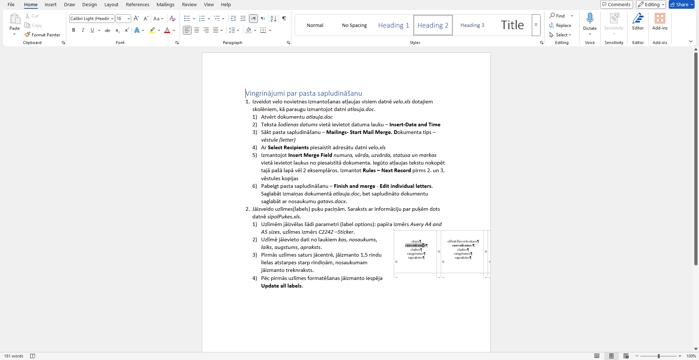
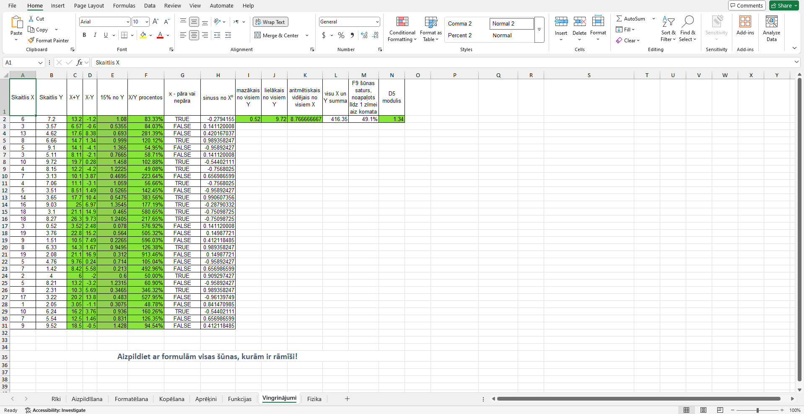
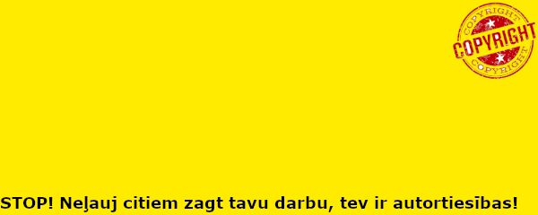

10. klases laikā es iemācījos izmantot daudz un dažādas datorprogrammas, kas ir noderīgas ikdienas dzīvē. Microsoft Word un Microsoft Excel es iemācījos ātri un efektīvi strādāt ar tekstu un datiem, kas ir noderīgi ļoti daudzās profesijās.Programmās GIMP un Inkscape es apguvu pamatus grafiskajai dizainēšanai. Video montēšana arī bija interesants process, un man ļoti patika tas, ka tas man lika padomāt par citu cilvēku intereses un uzmanības noturēšanu.
Ralfs Kalniņš 10.g
Video
Decembrī mēs nodarbojāmies ar video montēšanu. Tas bija ļoti interesanti, un mēs ar draugiem guvām jautras, smieklīgas atmiņas, eksperimentējot ar dažādiem rīkiem, kas bija pieejami montēšanas programmā. Bija jātaisa montāža par 3D kuba izveidi - cilvēku strādāšana, detaļu printēšana, kuba salikšana, utt. Šis uzdevums man ļāva brīvi izpausties ar savu radošumu.
Word
Microsoft Word - pirmā datorprogramma, ko šogad apguvām. Es sāku to izmantot jau no 5. klases, tāpēc es jau zināju visus pamatus, bet izrādās, ka Word ir spējīgs veikt daudz vairāk funkciju, nekā man jebkad bija licies.

Excel
Manuprāt, Microsoft Excel bija sarežģīts. Pamatnepieciešamības var iemācīties pāris stundu laikā, bet sarežģītas formulas un funkcijas man joprojām ir izaicinājums. Šī ir lieliska datorprogramma, jo tā var veikt gandrīz visu ar jebkāda veida datiem. Man patika neironu aktivācija, kad formula beidzot sāka strādāt.

GIMP
GIMP ir vislabākā grafiskās dizainēšanas programma, kas ir pieejama par brīvu (vismaz manuprāt). Tā ir spējīga sacensties ar dizainēšanas milžiem kā Adobe Photoshop. Izmantojot GIMP, es sapratu kā labāk darboties ar krāsām un slāņiem, un to, ka katrai bildei ir daudz vairāk svarīgu mazu faktoru, nekā daudziem šķiet.

Inkscape
Es uz Inkscape skatos kā uz mini Photoshop kopš brīža, kad stundā ap koku izdzēsu atkritumus tā, ka tas pat nebija pamanāms. Ļoti stilīgi. Nevar iztikt tikai ar GIMP vai tikai ar Inkscape, jo katrā programmā ir sava veida grafika. Kopumā, GIMP man patika vairāk.
3D modelis
3d modelēšana man patika. Tai lietojam web lietotni Tinkercad. Man tā patīk, jo programma ir ļoti intuitīva, viegli lietojama un neprasa sarežģītu programmatūras instalēšanu – viss notiek tiešsaistē. Tas ir lielisks rīks iesācējiem, lai apgūtu 3D modelēšanas pamatus.